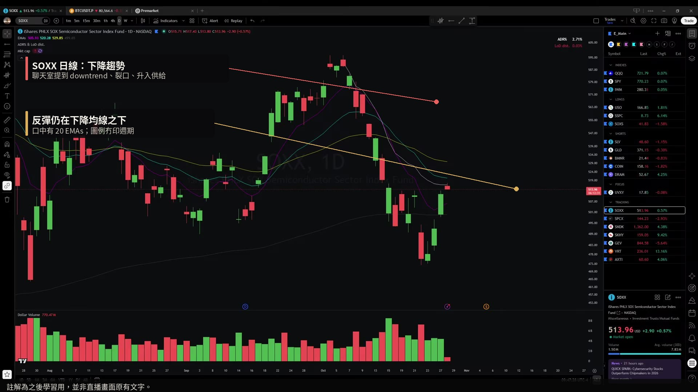
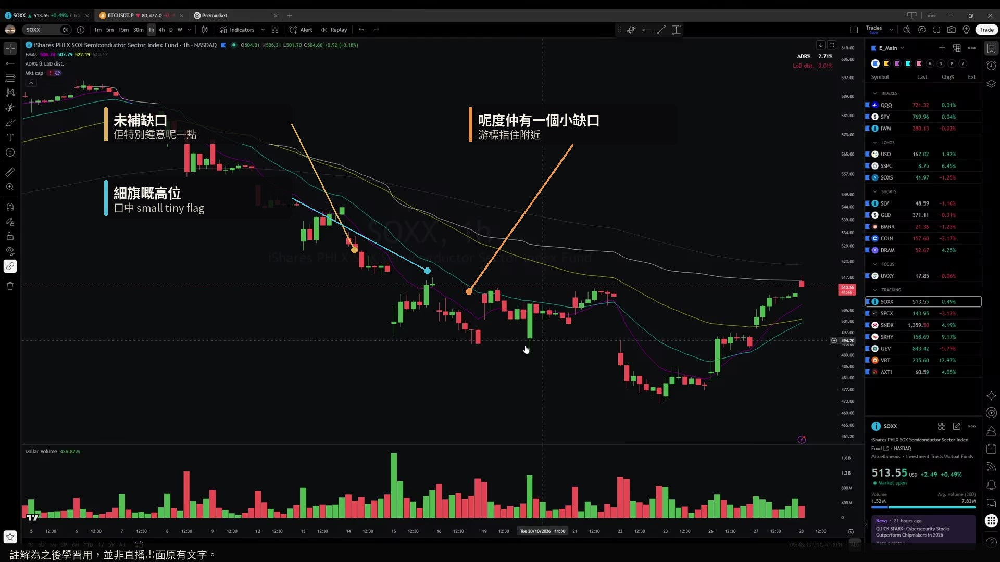
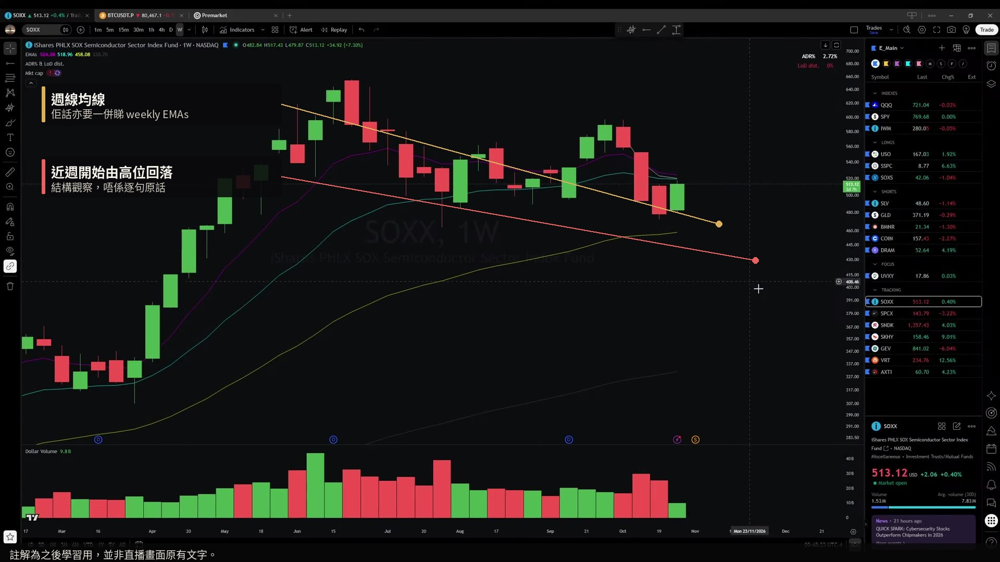

概要
用觀眾答案，再指住圖上最關鍵嘅位置
24:59 有人問點解淡 SOXX。佢先請聊天室一齊答。答案包括下降趨勢、未補缺口、多日反彈、多次裂口升入供給、行入 20 EMAs、大市裂口向上而板塊偏弱；Whisper 仲聽到 anchored VWAP。佢話好鍾意呢啲答案，然後親自指住小時圖上未補缺口、細旗嘅高位、另一個小缺口，再加週線均線，同埋大市。
YouTube 把第一句聊天室答案聽成 coffee up；Whisper 聽成 anchor vwap。兩邊都把均線寫成 20 EMAs。本站保留 20 EMAs 原文，並註明佢常用 21，圖例冇印週期，唔把 20 當成已核對。
圖一
SOXX 日線：下降趨勢，反彈仍在均線下
直播 26:25

原話
Can you explain a bit why shorting SOXX? I think this one is some of you can help me to answer. Why shorting SOXX? Anchored VWAP, downtrend, unfilled gaps, multi-day bounce, multi-gap ups into supply, running into 20 EMAs, market gapping up, sector weak. Wow, I love all the answers. Yeah, amazing, that's it.
可唔可以解釋一下點解淡 SOXX？我想呢題你可以哋幫我答。點解淡 SOXX？錨定 VWAP、下降趨勢、未補缺口、多日反彈、多次裂口升入供給、行入 20 EMAs、大市裂口向上、板塊偏弱。哇，我好鍾意呢啲答案。係，好正，就係咁。
YouTube 把 SOXX 聽成 massive XX，把第一句答案聽成 coffee up；Whisper 先聽成 meso xx／stock x，再聽到 anchor vwap。代碼以畫面 SOXX 為準。20 EMAs 兩邊字幕一致，唔擅自改成 21。
點樣讀
日線用嚟對照聊天室講嘅大結構：下降趨勢、反彈同裂口仲在供給同均線之下。
anchored VWAP 係字幕分歧較大嘅一項，只當聊天室可能提出過嘅答案，唔把圖上某一條線標死做 AVWAP。
圖二 · 主圖
未補缺口同細旗嘅高位
直播 27:10

原話
And I particularly like this unfilled gap, like this high of this small tiny flag. And we got the little gap here.
而且我特別鍾意呢個未補缺口，就係呢個細旗嘅高位。而呢度我哋又有呢個小缺口。
點樣讀
呢幅係佢親自指位置嘅主圖：未補缺口、細旗高位、再加一個小缺口。
形態名稱以原話 tiny flag 為準，唔另外發明其他形態名。
圖三
再加週線均線，同埋大市
直播 27:20

原話
Also one thing is the weekly EMAs. And definitely also the market as well. I think that's perfect answers from you guys. Yeah, I'm feeling really happy, like you guys really nailed it.
仲有一樣係週線均線。當然亦都係大市。我覺得你哋呢啲答案好完美。係，我好開心，你哋真係答中咗。
點樣讀
淡 SOXX 唔只係日線形態，仲要週線均線同大市一齊對。
圖例冇印週線均線週期。下一科會比較今日同週一、週二。
附註
注意事項
- 20 EMAs 係字幕原文，可能係 21；圖例冇印週期，唔把 20 當成已核對。
- anchored VWAP 同 YouTube 嘅 coffee up 有分歧，只作可能答案，唔標死圖上線段。